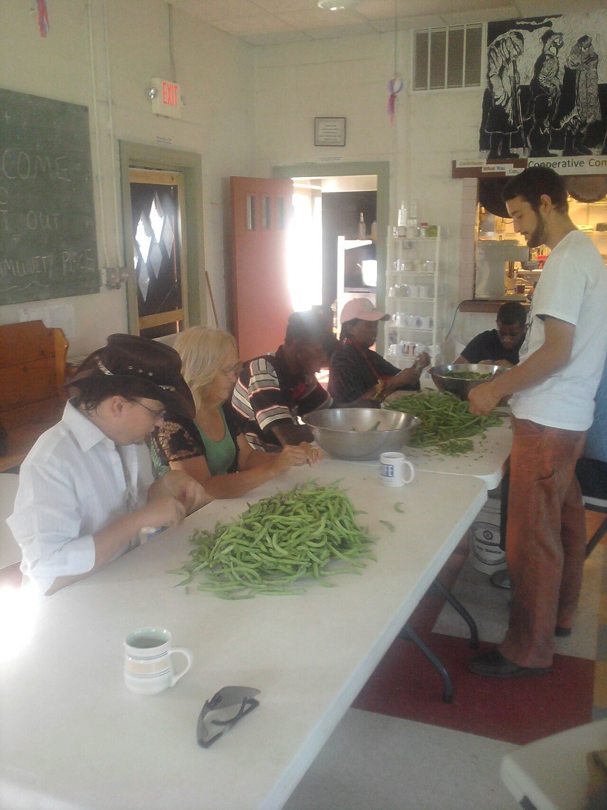
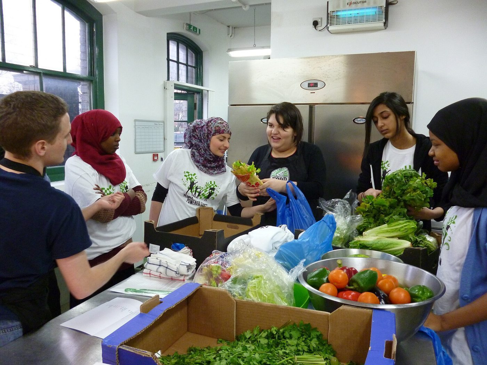

Bantuan Sosial
Membantu pemenuhan kebutuhan dasar masyarakat yang membutuhkan.
Awali Hari dengan Kebaikan, Beri Harapan untuk Sesama.
Bersama Yayasan Nur Mirah, sedekah subuh Anda membantu menyediakan makanan bagi masyarakat yang membutuhkan serta mendukung program-program sosial lainnya.

Pagi adalah waktu yang tepat untuk memulai kebiasaan baik. Sedekah subuh adalah cara sederhana untuk menciptakan perubahan nyata.
Membantu mereka yang sedang kesulitan.
Agar lebih banyak orang mendapat bantuan.
Kebaikan kecil yang berarti besar.
Menjadi pribadi yang lebih peka terhadap sekitar kita.
Setiap hari, kami menyediakan nasi darurat untuk masyarakat yang membutuhkan. Program ini mampu menyediakan 300 – 400 porsi makan setiap hari.

Selain Dapur Darurat, sedekah subuh juga mendukung berbagai program sosial Yayasan Nur Mirah yang berfokus pada pemberdayaan masyarakat dan bantuan kemanusiaan.
Membantu pemenuhan kebutuhan dasar masyarakat yang membutuhkan.
Membuka lebih banyak kesempatan belajar untuk anak-anak.
Program yang mendukung kemandirian dan kualitas hidup yang lebih baik.
Bantuan cepat untuk situasi darurat dan bencana.
Sangat mudah, siapa pun bisa ikut berkontribusi.
Lakukan dengan niat baik untuk membantu sesama.
Tidak ada nominal khusus. Sesuaikan dengan kemampuan Anda.
Melalui metode pembayaran yang tersedia.
Lakukan setiap pagi untuk dampak yang lebih besar.
Sedekah subuh bukan hanya membantu hari ini, tetapi juga membangun harapan untuk masa depan yang lebih baik bagi banyak orang.
Bersama, kita bisa menghadirkan lebih banyak senyum setiap hari.
Tidak ada nominal minimal. Sedekah dapat dilakukan sesuai kemampuan masing-masing.
Dana digunakan untuk mendukung program sosial Yayasan Nur Mirah, seperti Dapur Darurat, bantuan sosial, dukungan pendidikan, pemberdayaan masyarakat, dan respon kemanusiaan.
Donasi dapat dilakukan melalui transfer bank, e-wallet, dan QRIS. Hubungi kami untuk mendapatkan informasi kanal resmi.
Bisa. Justru kami mengajak agar sedekah subuh menjadi kebiasaan baik yang dilakukan setiap pagi.
Dana dikelola secara amanah dan transparan. Yayasan menyediakan dokumentasi serta laporan penyaluran secara berkala kepada para donatur.
Laporan penyaluran dikirimkan secara berkala kepada donatur, dan dapat diminta langsung melalui menu Hubungi Kami.